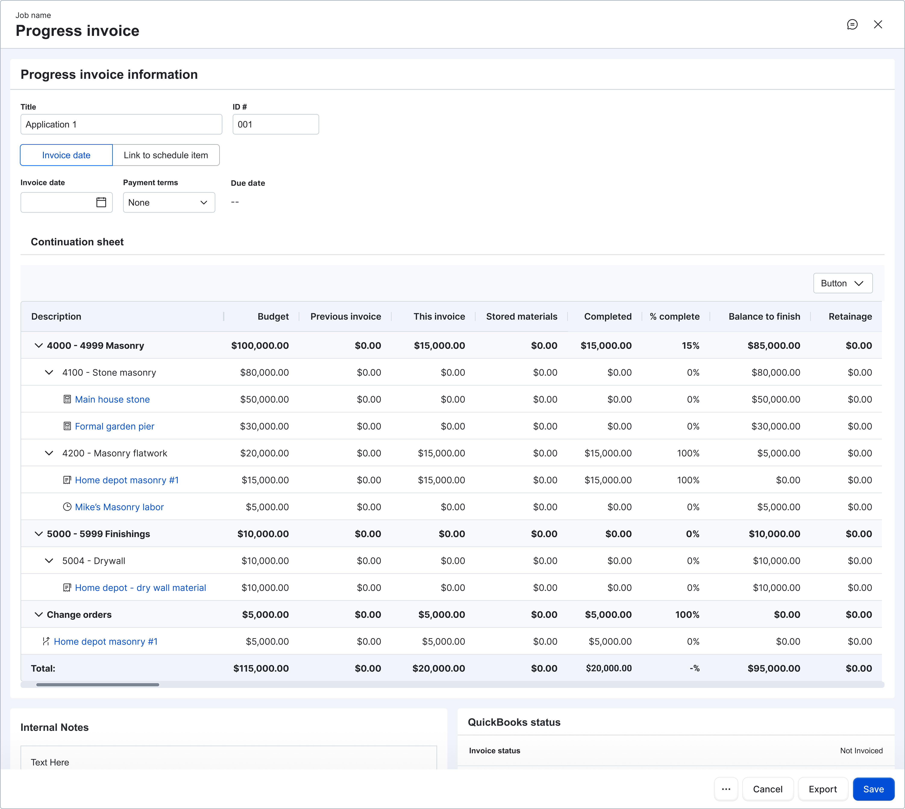

Progress Invoicing
Progress invoicing is how many builders get paid on larger, longer, more structured jobs. When Buildertrend's workflow couldn't produce a clean AIA-style pay application, builders kept their real billing in Excel. This is the story of bringing that work back into the platform: the research, the design decisions, and the questions still open.
Why this matters
For builders running structured, multi-draw jobs, the pay application is a contract deliverable. Banks, architects, and clients expect a specific shape: the AIA G702 cover sheet and G703 continuation sheet, tied to a Schedule of Values, with retainage calculated, change orders reconciled, and stored materials accounted for. It isn't decorative; it's what unlocks the next draw.
Buildertrend's existing progress invoice gave builders a starting point, but couldn't produce that document cleanly. So builders pulled the data back out. They rebuilt the pay application in Excel every month, reconciled it manually, and kept the "real" billing in a spreadsheet next to the platform, paying for a tool they couldn't use for the work it was meant for.

How many builders still produce pay applications today — a hand-built G703 spreadsheet maintained outside Buildertrend.
Losing that job is expensive twice over: once in churn, and again in the builders who evaluate Buildertrend, see the gap, and walk over to Procore. The goal of this project was to close that gap: make the workflow complete enough, and trustworthy enough, that builders stop exporting out.
How we approached it
Progress invoicing is wide: cover sheets, SOV layouts, retainage, stored materials, change orders, open-book costs, selections, payments, client visibility. A naïve plan would be to spec the full AIA toolkit and ship it. We deliberately didn't do that.
Instead, we set up an ongoing partnership with a Customer Advisory Board of ten builders who actually run AIA billing, and built in tight loops alongside them: ship a slice, watch how it lands, keep the research running. The discipline was separating what a builder needed the system to enforce from what was just a preference, and not trying to solve everything in any one release.
Within that loop I ran four complementary research threads:
- Client-presentation interviews with the CAB, walking builders through early AIA wireframes and watching which moments sparked recognition.
- A structured card sort in Maze asking the CAB to rank nine progress-invoice features as must-have vs. nice-to-have, so our roadmap was ranked by builders, not by engineering convenience.
- Focused Maze surveys for specific design decisions (change-order layout, grouping strategy) before we committed.
- Follow-up builder interviews to pressure-test any assumption the surveys surfaced, especially the ones we thought we already had answers to.
What builders taught us
The research reshaped what we thought the problem was, and, more than once, what we were about to build.
The early signal: Excel is the benchmark
The earliest interviews told us the design was on the right track, not because builders liked it, but because they compared it to the workaround it was meant to replace.
"That actually does a lot of what I was doing in my spreadsheet. I like it." — Joan Tyer
"We'd be able to have a 'blue bar' for each change order and no longer have to add the 'CO #XXX' to every line item… LOVE IT!" — Kim Handler
Kim's quote locked in the grouped-row treatment for change orders before we went anywhere near Maze. Joan's validated the central thesis: we were not designing a new billing tool. We were designing a replacement for her spreadsheet.
The card sort — ranked by builders, not by us
The CAB card sort ranked nine progress-invoice features. It reshuffled the roadmap.
What the CAB ranked
Must solve
- Client preview of invoices
- In-progress jobs support
- $ amount entry (not just %)
- Client send notifications
- Buildertrend Payments
- Retainage (8 / 14 builders)
Nice to have
- Draw package — PDF + cost-code-ordered attachments (7 / 14)
- Cover sheet (G702)
- Auto-generated change orders for overages
- Lien waivers (5 / 14) — demoted from must-have
The surprise: retainage ranked above lien waivers, inverting our working assumption. Fewer builders need retainage than lien waivers, but the ones who do are hard-blocked without it. It moved up the release order.
The quieter signals — from builder interviews
"Retainage is hard to deal with in Buildertrend right now… you have to keep a separate spreadsheet just for retainage." — Billy Anderson, Waters Building and Design
"Retainage needs to be auto-calculated… sometimes 10% on labor but 0% on materials." — Andrew Couchey, Riggs Custom Builders
"You bring on new features, but never really show how they should be used in relationship to everything else." — Cindy Roth, Beyond Custom Contracting
Cindy's observation hit the quietest part of the problem: adoption isn't only about feature parity. It's about whether a builder can see how a new piece fits the workflow they already know. The client-preview work (and the onboarding still in front of us) lives in that gap.
How we designed for it
Throughline on every call: preserve how the builder already thinks about the job, and surface change-order and cost complexity without making the default flow any harder to read.
Change orders as rows, not columns
Validated twice: first by Kim's "blue bar" reaction in interviews, then confirmed by a focused Maze survey. Six of nine CAB builders preferred grouped rows over extra columns. Five of nine prioritized keeping their estimate-group layout over any change-order layout preference. Both findings pointed to the same call. Change orders always live in their own section regardless of the grouping view.

Change orders flow into the progress invoice as grouped rows — no re-entry, no line-by-line CO tagging.
Group by cost code or estimate group
Builders think about jobs two ways: the auditor's way
(cost code) and their own way (estimate group:
framing, foundation, finishes). Both are correct for
different audiences. The invoice supports both with a
toggle that persists per-invoice in
InvoiceMetadata.LineItemGroupStrategy and
assembles the hierarchy client-side so the switch is
instant.


Open Book — costs set a floor, not a cage
When open-book costs flow in (bills, time-clock, accounting), they raise the floor on each cost code's percent complete. A builder can't under-invoice work their team has already done. Cost rows are read-only; the remaining balance is proportionally editable across estimate items. Guardrails, not handcuffs.
Selection overages — the hardest edge case
The design problem that took the most work: what happens when a selection comes in over its allowance?
-
Same cost code as the allowance — invoice
only the overage, and surface it under
Approved changes alongside change orders.
Preserves the estimate-group layout; avoids
double-counting. For multi-item allowances, each
overage distributes proportionally via
(A / T) × O(item amount × overage ÷ total billed in the group), so a single kitchen overage spreads cleanly across the faucets, countertops, and backsplash that caused it. - Different cost code — credit the allowance (inverse it) and invoice the full amount under the new cost code. Job totals still reconcile to zero.
Client visibility — closing the feedback loop
The thread we kept hearing: clients want to see what is coming, not just what has already been paid. Builders were releasing invoices early as a workaround for visibility. We're closing the loop with a client-facing financial summary that surfaces pending invoices, pending selections, and change-order impact before anything is billed.

Client view of the job price summary — revised client price, remaining balance, pending impact, and selection overages all visible in one place.
What we're exploring — and why
The releases so far have closed the widest gaps. The harder work from here is less about feature coverage and more about fit. Does the workflow still feel honest to a builder on day 45 of a job? Three threads are open:
Client preview customization
When the card sort flagged "in-progress jobs support" as a must-have, we'd already scoped work for it. Before building, I ran follow-up interviews with the builders who voted it up. They told me something different: they're fine running their existing AIA outside Buildertrend until a new job starts, and they'll manually enter previous-invoice totals to catch up. The original "must-have" was an assumption that no workaround existed. It did.
We redirected the engineering capacity to what those same builders kept mentioning instead: giving them control over what clients see before an invoice is released (which columns, which totals, which line-item detail). That's the closing act of the visibility thread and the next real adoption lever.
Retainage
The card sort's biggest release flag. Not every builder needs it, but the ones who do can't ship a single pay application without it. We're exploring the data model now: separate percentages for labor vs. materials, auto-calculation against scheduled value, and a way to release retainage at the end of the job without re-keying the whole SOV.
Selection invoicing on progress invoices
The same-vs-different-cost-code logic we designed has an implementation to catch up with: the R1.7 release where the math in the design becomes real behavior for builders on live jobs. Validation will come in two waves: first a Maze run with the CAB on the flow, then adoption data once it ships.
Prototype
The prototype below is where design decisions get stress-tested against real data shapes. Toggle the grouping, click into a row, open the change-order flow.
Open prototype in new tab: bt-invoice.vercel.app/#progress-invoice ↗
How we're validating it
"15 CO+ builders agree that client financials are no longer an adoption blocker." — Ship of Theseus quarterly goal
This is an outcome metric, not an output one. Leading indicators we're watching:
- Percentage of builders creating multiple progress invoices per job
- Percentage released (not just created)
- Adoption on in-flight jobs via workaround
- Time from first invoice creation to first release
The live risk: recruiting. Talking to fifteen CO+ builders takes more work than the number suggests — that segment is busy and harder to schedule. That constraint shapes how much we lean on quick-turn Maze surveys versus deep interviews, and why the CAB relationship matters so much.